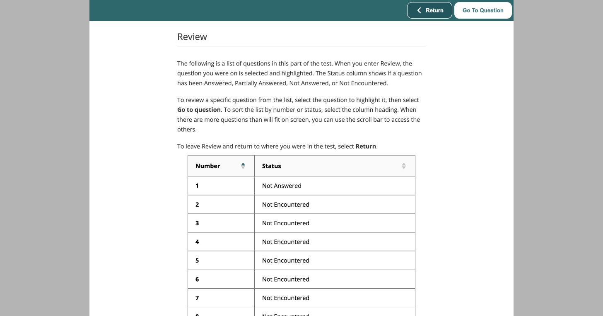
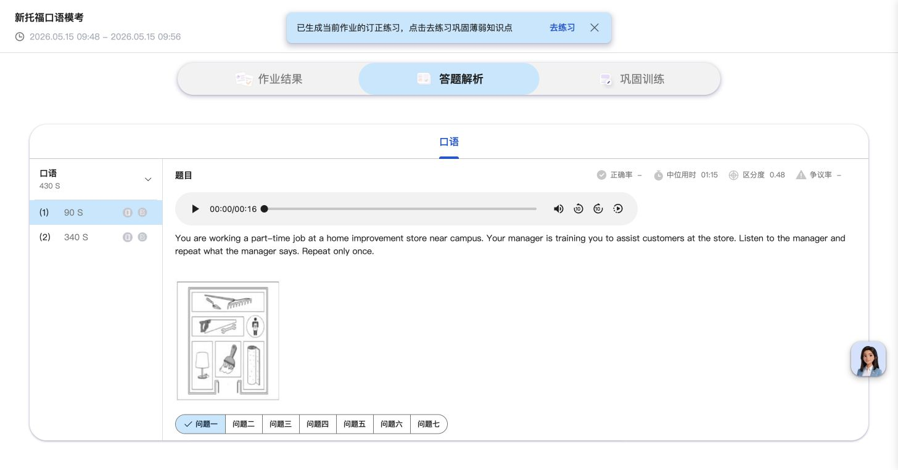
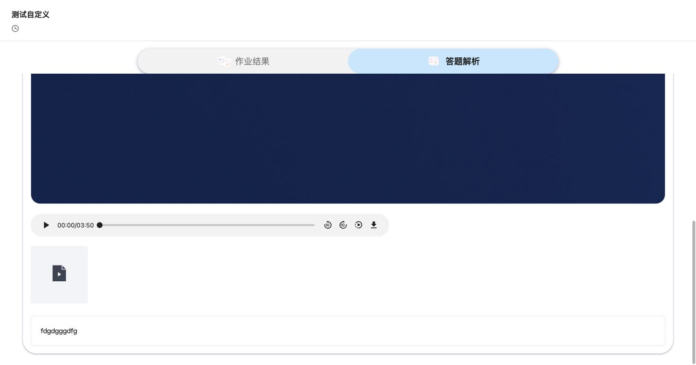
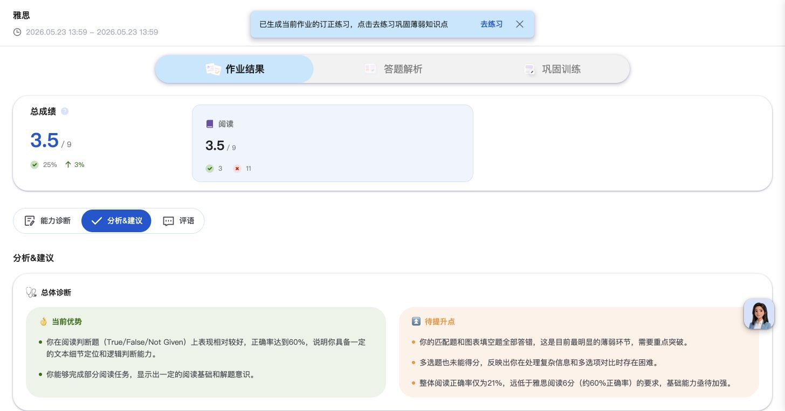
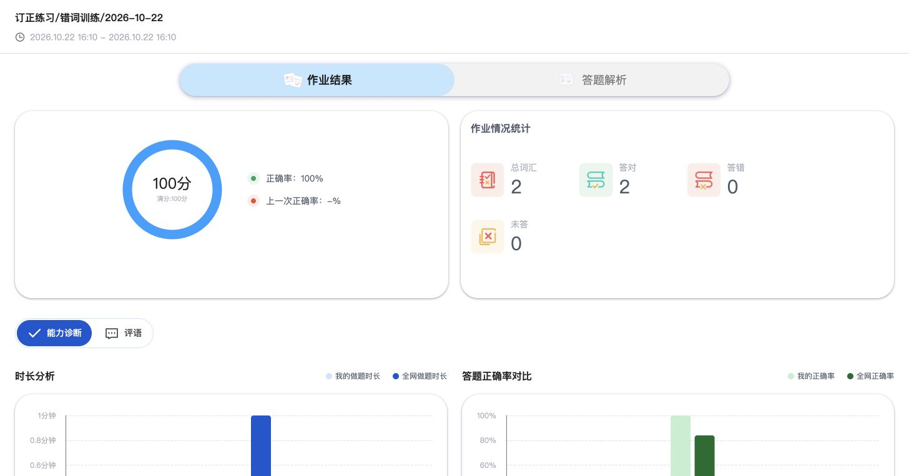
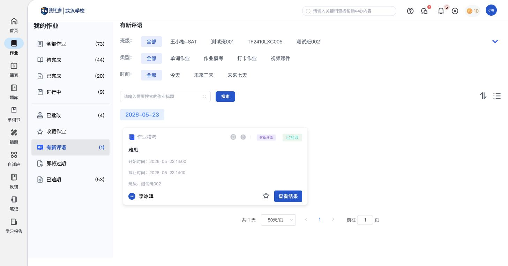
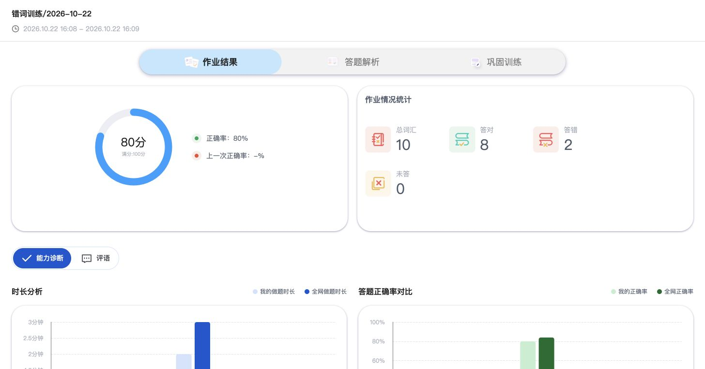
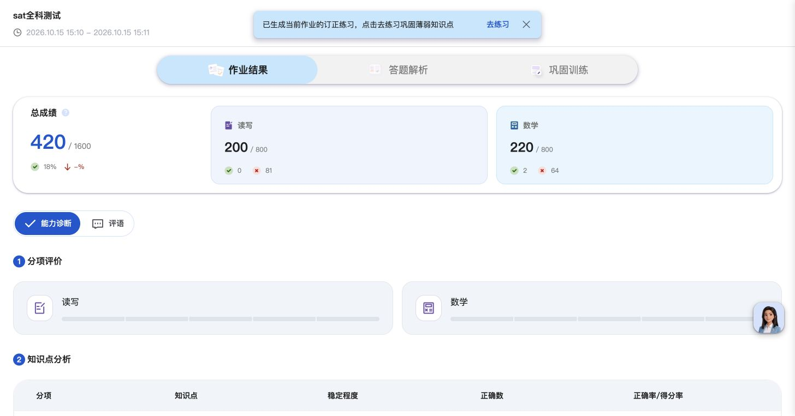
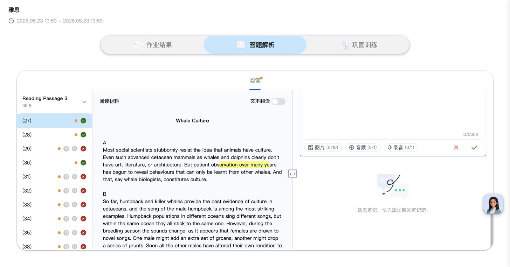
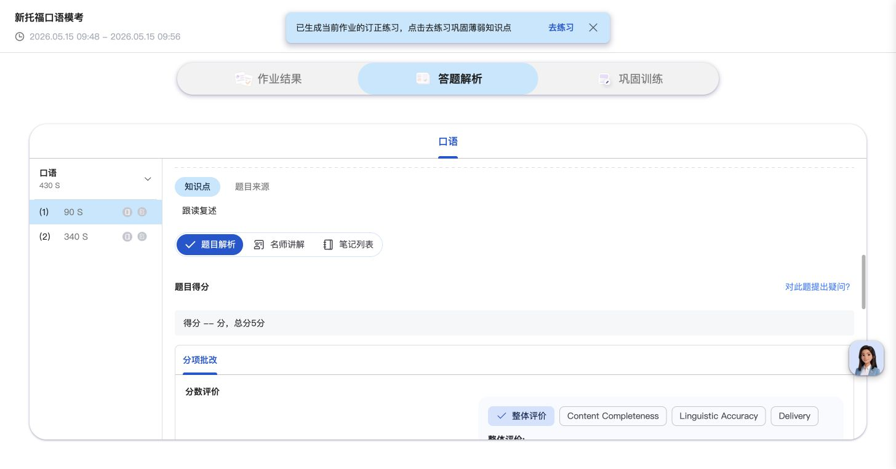

作业：完成学习任务，查看反馈并复习
作业是学生完成老师安排的主要入口。先找到要做的内容，再按词汇、模考、口语、自定义或课件的方式学习；完成后查看成绩、解析和评语，继续订正或记录笔记。实时作业是在统一时间参加练习的一种组织方式。
功能定位与页面结构
实时作业是作业的组织方式，口语是具体题型，不把它们理解为互斥的列表分类。打卡入口已见，但没有任务样例，单列待补。
核心功能清单
| 功能 | 实际用途 | 对比关注点 |
|---|---|---|
| 一、找到作业 | ||
| 我的作业 | 找到还没做完的作业、继续已有草稿，或查看新的老师反馈。 | 能否让学生直接找到下一步要做的事，而不只看到一长串作业名称。 |
| 二、按内容完成作业 | ||
| 词汇练习 | 按题目要求练单词，再逐词查看答案、发音和用时。 | 练词方式是否与学习目标匹配，错词是否能回到原题和发音。 |
| 模考与题型练习 | 按考试或题型要求作答，通过计时和答题概览管理进度。 | 是否有适合对应考试的作答形式，学生能否掌握时间和未完成题目。 |
| 口语作业 | 回听自己的录音，对照转写文字和分项批改，知道哪里需要改进。 | 反馈是否落到学生实际说了什么、具体哪里有问题，而不只有一个分数。 |
| 自定义作业 | 按老师的要求，用文字、图片、音频或视频提交学习成果。 | 是否能承接作文、录音、视频等开放作业，并保留学生原始成果供回看。 |
| 课件学习 | 接收有学习期限的资料，打开文档阅读，并查看任务完成状态。 | 是否能将资料阅读纳入学习安排，并让学生看清任务进度。 |
| 三、查看成绩与反馈 | ||
| 成绩与老师评语 | 查看得分、薄弱点和后续建议，了解老师对本次作业的反馈。 | 除了分数，学生能否知道薄弱点、收到老师反馈，并明确接下来该练什么。 |
| 答题解析 | 回到原题，对照自己的答案、正确答案和材料，弄清错在哪里。 | 学生是否能从成绩回到原题，结合材料和答案理解错误。 |
| 四、复习与答疑 | ||
| 订正练习 | 从原作业进入关联练习，针对出错内容再做一遍，并单独查看成绩。 | 能否让学生围绕本次错误继续练习，并看见订正后的表现。 |
| 题目笔记与AI助教 | 在当前题目旁记下思路，或让AI解释词汇、原文和解题方法。 | 能否边看题边记思路、追问疑点，并方便后续复习。 |
| 五、特殊组织方式：实时作业 | ||
| 实时作业 | 按统一时间参加练习，交卷后等待本场结束，再查看结果。 | 同步练习是否有清楚的等待、作答、交卷和结束状态。 |
我的作业
找到还没做完的作业、继续已有草稿，或查看新的老师反馈。
- 待完成、进行中、已完成对应学习进度；卡片按状态提供进入作业、继续作答、查看结果或打开课件。
- 已批改和有新评语帮助学生找到老师的反馈；即将过期、已逾期帮助学生处理快到期或需要补做的作业。
- 卡片显示作业名称、类型、班级、老师和起止时间；还提供收藏作业入口。

词汇练习
按题目要求练单词，再逐词查看答案、发音和用时。
- 实际见到英译中选择和听音选义两种样例：选择释义完成词汇题；不能据此当作全部练习方式。
- 逐词回看时保留原选项、自己的答案、正确答案和耗时，便于定位错词。
- 听音样例提供单词音频、美式发音选项和标准发音列表。成绩与订正练习的共用流程在后文集中说明。


模考与题型练习
按考试或题型要求作答，通过计时和答题概览管理进度。
- 已有雅思、SAT和新托福样例，题目按科目、题组组织；不同考试使用相应的页面模板。
- 实际进入的新托福组句题提供词块、句子空位、倒计时和下一题入口。
- Review答题概览按题号标记已答、部分作答、未答、未浏览等状态，并提供跳转到指定题目的操作。
- 写作准备页还介绍邮件写作、学术讨论，完整编辑页和作文批改尚待补充。成绩与题目解析统一见后文。


相关说明：成绩与老师评语 · 答题解析 · 题库篇 · 模考与学练模式
口语作业
回听自己的录音，对照转写文字和分项批改，知道哪里需要改进。
- 已有新托福口语样例包含跟读复述、模拟面试；跟读题可查看场景要求、题目音频、原文和分问题。
- 学生答案保留录音播放器和转写文字，可以把自己说的内容与原题对照。
- 批改分内容完整性、语言准确性、表达等维度，并将具体文字标记与批改详情放在一起。


自定义作业
按老师的要求，用文字、图片、音频或视频提交学习成果。
- 作答页将老师的任务要求与学生答题区并列，提供富文本输入、图片、音频、视频上传及交卷入口。
- 进行中的作业可继续已有草稿；已提交样例保留原要求、附件、文字或媒体答案及题目得分。
- 这里是开放提交方式；标准作文的专门编辑和批改另需样例，不能用自定义作业代替说明。


课件学习
接收有学习期限的资料，打开文档阅读，并查看任务完成状态。
- 课件任务显示老师、班级和起止时间；点击“打开”后进入新的文档查看标签页。
- 已有PDF样例通过浏览器文档查看器阅读，可翻页和缩放；这些是文档查看器提供的阅读工具。
- 本PDF样例打开后，学生列表中的任务变为“已完成”。音视频的学习页和播放完成条件另待补充。


相关说明：常规作业流程 · PDF完成记录样例
成绩与老师评语
查看得分、薄弱点和后续建议，了解老师对本次作业的反馈。
- 作业结果按模板展示总分、分科或分项成绩。词汇样例有正确率和对错词数，SAT样例分读写、数学展示。
- 能力诊断可展开分项评价、知识点掌握情况、高错点，以及耗时和正确率对比。
- 部分结果页另有“分析&建议”，将优势、待提升点、时长分析和行动建议整理成文字。
- 评语页显示老师姓名、日期和具体内容；“有新评语”入口提醒学生查看，读过后该样例的新评语标记消失。



答题解析
回到原题，对照自己的答案、正确答案和材料，弄清错在哪里。
- 按分科、题组和题号切换，题号旁保留对错和用时，方便先看错题或耗时较长的题。
- 阅读样例将原文与题目并排展示，提供文本翻译入口、学生答案、正确答案、选项分布、知识点和题目来源。
- 页面还提供题目解析、名师讲解、笔记列表入口；名师讲解的具体内容是否齐全需按题目确认。
- 词汇、口语和自定义作业按各自内容展示原题与答案，前文仅说明差异，不重复这一整套导航结构。

相关说明：题目笔记与AI助教 · 辅助功能 · 题目纠错
订正练习
从原作业进入关联练习，针对出错内容再做一遍，并单独查看成绩。
- 结果页的“巩固训练”提供关联订正练习及其完成状态，可以进入或查看结果；部分结果页也有“去练习”提示。
- 已有词汇样例：原作业10个词中错2个，关联订正练习只包含这2个词，并有独立的100分结果。
- 这说明复习可以承接具体作业；学生是否能自行生成、其他题型如何选题尚待补充。


相关说明：题目笔记：记录订正思路
题目笔记与AI助教
在当前题目旁记下思路，或让AI解释词汇、原文和解题方法。
- 笔记列表区分“练习笔记”和“订正笔记”，可以查看已有内容或添加文字、图片、音频、录音。
- AI助教在题目旁提供重点词汇、翻译、答题解析、题目订正等快捷提问，也支持自由输入问题。
- 已有AI回答包含考点、正确答案、原文依据、干扰项分析和解题技巧。
- “订正笔记”用于记录理解和思路；“订正练习”会进入另一份练习，二者用途不同。笔记的集中整理与复习见笔记篇。


相关说明：订正练习 · 笔记篇 · 集中整理与复习
实时作业
按统一时间参加练习，交卷后等待本场结束，再查看结果。
- 实时作业仍从“我的作业”进入，卡片增加实时标签和统一起止时间；它是组织方式，不是另一套题目类型。
- 开始前进入等待区，能看到开答倒计时和参与学员；已有样例到设定时间后自动进入英译中选择题。
- 作答时显示统一倒计时；确认交卷后，页面提示“请等待老师结束答题”，不会立即展示成绩。
- 本场结束后任务显示已完成，可以查看成绩和逐题解析；这些结果页面沿用本篇共用说明。


相关说明：词汇作答样例 · 成绩与老师评语 · 答题解析 · 独立联动说明 · 实时作业的两端流程
辅助功能（按需展开）
题目纠错（辅助功能）
发现材料、答案或解析有问题时，针对当前题目提交内容反馈。
- “对此题提出疑问”实际打开题目纠错表单，可选材料、答案、解析、其他，补充文字说明。
- 这是反馈题目内容问题的入口，未见向任课老师直接发问的流程。

已有表单观察记录，尚未提交纠错。
与其他模块的关联
- 首页负责时间安排和消息入口；作业篇完整说明从进入学习到结果、解析和复习的过程。
- 题库、单词书、错题等菜单保留选内容和进入方式；进入相同答题或结果页面后，引用本篇共用说明。
- 题内笔记和AI助教在本篇说明当前题目的使用方式；笔记菜单负责集中整理、回看和复盘，不再重复编辑器。
- 普通作业与课件按“老师布置→学生完成→老师查看或批改”理解；实时作业另有统一开始、实时查看和统一结束流程，在独立联动说明展开。
学生端 · 首页 · 学生端 · 题库 · 学生端 · 笔记 · 独立联动说明 · 实时作业 · 常规作业流程 · PDF课件样例 · 独立联动说明 · 待确认关系
待补内容
- 打卡作业：已见分类入口，目前没有任务样例，周期、提交内容和完成记录待补。
- 标准写作与口语的完整提交：组句已见实际作答页；邮件、学术讨论编辑器、作文批改，以及口语首次录音与重录流程尚未记录。
- 视频和音频课件：播放页面、学习时长与完成条件尚缺样例；不能套用PDF的完成方式。
- 解析与订正规则：名师讲解的实际内容、订正练习如何生成和选题尚待补充。题库篇另列模考与学练模式的差异。
- 跨端关系：实时作业的多人、手动提前开始、强监管等差异，以及新提交后的批改与订正回流，统一在独立联动说明维护。
操作依据
保留32组截图与完整页面观察，基础操作不单列为核心功能。
原作业SW01—SW30的截图与操作索引保留；新增SW31为2026-10-26补拍的口语答案区，SW32为重新确认的打卡空列表。实时作业的学生侧截图沿用11_师生联动中的SL系列。
本轮仅补看已有口语结果，未新增答案、评论、笔记或提交。教师端操作与双端对照均引用独立联动说明。
辅助截图：任务状态、成绩样式与笔记编辑





本轮产生的测试记录与状态变化
- 打开既有PDF任务后标记完成；查看既有评语后新评语标记消失。
- 写作测试任务进入了计时组句题，未输入答案、未交卷。
- AI快捷答题解析产生了一条提问与回复；未发送教师消息或题目纠错，未保存新笔记。
- 新增实时测试作业14753411，王小格-SAT，10:03开始、60分钟；学生完成三词并提交，教师提前结束。记录保留，未发送额外评语。
- 资料维护：SW30原页面文字因编号冲突被覆盖，原截图与索引保留；当前打卡空列表另以SW32补录。SW30.txt明确说明了记录变更。
逐项操作记录与截图（按需查看）
- SW01 截图 · 页面观察 — 我的作业按学习进度与反馈状态组织；保留课程任务类型和作业卡片入口。
- SW02 截图 · 页面观察 — 点击PDF任务“打开”后，新标签页直接访问课件文件地址；未见平台内学习播放器或提交按钮。
- SW03 截图 · 页面观察 — 词汇结果：分数、正确率、对错/未答词数、能力诊断、评语、时长/正确率对比及发音列表。
- SW04 截图 · 页面观察 — 逐词答题解析显示题号、对错和耗时，听音选义题保留原题、学生答案、正确答案及提出疑问入口。
- SW05 截图 · 页面观察 — “对此题提出疑问”打开题目纠错表单，问题类别为材料、答案、解析、其他，描述上限2000字；未提交。
- SW06 截图 · 页面观察 — 巩固训练页显示“订正练习”及已完成状态、查看入口；未由“精听跟读”宣传语推定本词汇作业另有跟读题。
- SW07 截图 · 页面观察 — 从原词汇结果“巩固训练→查看”打开关联订正作业；原2个错词对应订正任务总词2、正确2、100分。仅记录既有样例，未重新作答。
- SW08 截图 · 页面观察 — “有新评语”集中定位老师反馈待查看的作业，示例为已批改雅思作业。
- SW09 截图 · 页面观察 — 雅思结果页含总分/分项、知识点稳定程度、Top高错点，并提示已有订正练习。
- SW10 截图 · 页面观察 — 学生结果页可查看老师姓名、日期和实际作业评语“nice”。该页未见学生评语回复输入框。
- SW11 截图 · 页面观察 — 分析&建议包含总体诊断、优势/待提升、时长分析、分项建议和行动建议；AI文字仅记录功能，不当作学生能力事实。
- SW12 截图 · 页面观察 — 模考解析：左侧题号/对错，原文与题目并列；包含文本翻译、选项分布、知识点来源、题目解析/名师讲解/笔记列表及学生/正确答案。
- SW13 截图 · 页面观察 — 关闭笔记功能引导后记录清晰的阅读解析布局。
- SW14 截图 · 页面观察 — 题目笔记区分练习笔记与订正笔记，均有添加入口；已有带日期的练习笔记。
- SW15 截图 · 页面观察 — 订正笔记可写3000字，附图片10张、音频1个、录音1段；未保存内容。
- SW16 截图 · 页面观察 — 订正笔记编辑器底部显示图片、音频、录音及取消/确认操作。
- SW17 截图 · 页面观察 — AI侧栏提供重点词汇、翻译、答题解析、题目订正快捷入口及自由输入，标注内容由AI生成。
- SW18 截图 · 页面观察 — 打开教师PDF后重新进入全部作业，PDF已标记“已完成”，待完成45→44、已完成19→20；只确认本PDF样例打开后的状态变化。
- SW19 截图 · 页面观察 — AI快捷提问已返回题目考点、答案、原文依据、干扰项和解题技巧；未核验生成内容准确性。
- SW20 截图 · 页面观察 — 自定义作业以老师要求为题干，支持富文本、图片/音频/视频作答和交卷；已有草稿保持原样。
- SW21 截图 · 页面观察 — 口语结果按跟读复述、模拟面试等题型展示分项评价和得分率；总分当前缺值，未据分项展示补算。
- SW22 截图 · 页面观察 — 口语跟读结果含题目音频/原文、分问题、学生录音/转写、内容完整性/语言准确性/表达评分和批改详情。
- SW23 截图 · 页面观察 — 口语学生答案区可回放录音并对照转写及分维度批改。
- SW24 截图 · 页面观察 — 自定义答题解析保留教师要求、学生提交内容和题目得分，区别于标准题库逐题对错。
- SW25 截图 · 页面观察 — 自定义作业已提交样例保留音视频播放器及文字答案，可查看原始提交。
- SW26 截图 · 页面观察 — SAT多科结果同时展示读写、数学总分与分项、知识点和高错点；与雅思共享结果/解析/巩固结构。
- SW27 截图 · 页面观察 — 写作开始页列出组句、邮件写作、学术讨论三类任务；本次记录平台实际题型，不引用考试外部规定。
- SW28 截图 · 页面观察 — 组句题以词块填入句子空位，顶部显示题号、倒计时、Review及Next；已进入计时，未输入或交卷。
- SW29 截图 · 页面观察 — 计时练习Review列表按题号显示Not Answered/Not Encountered等状态，并可Go To Question；未交卷。
- SW30 截图 · 页面观察 — 清空名称后，打卡作业分类当前没有样例；仅确认分类入口，不据此补写打卡提交/排行功能。
- SW31 截图 · 页面观察 — 补拍已有口语结果的学生答案区：录音、转写与内容完整性、语言准确性、表达批改同屏；仅查看和滚动，未重新作答。
- SW32 截图 · 页面观察 — 清空名称，班级和时间均为全部，选中打卡作业，页面显示“还没有作业数据~”；补录当前状态。